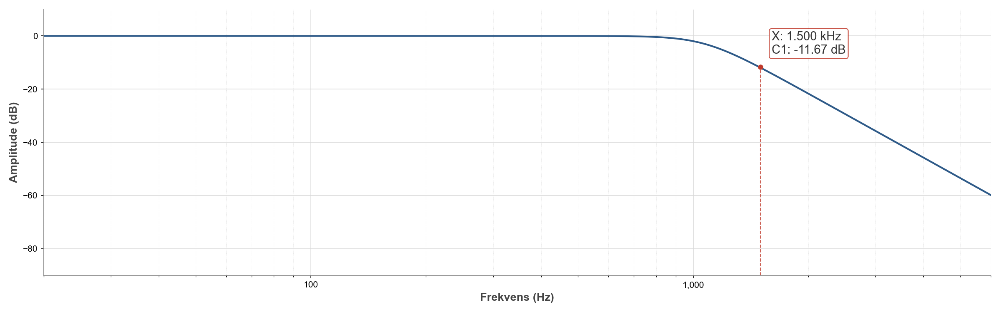

A 6th-order Butterworth anti-alias filter
Anti-aliasing for an ADC sampled at 3 kHz: the signal must be attenuated by at least 10 dB at the Nyquist frequency of 1.5 kHz, while keeping the cutoff above 1.125 kHz so the passband stays useful. A Butterworth response gives flatness in the passband; doing the math says sixth order; the implementation is three cascaded Sallen-Key stages with one op-amp each.
The math, briefly
For a Butterworth filter, the order needed to hit attenuation A
at frequency fstop while keeping the −3 dB cutoff
fc elsewhere is
n = (1/2) · ln(A⁻² − 1) / ln(f_stop / f_c)
With A = 10−0.5, a 5% margin on both sides, and
fstop/fc ≈ 1.21, this gives
n ≈ 5.86, rounded up to n = 6.
Three Sallen-Key sections, each with the same ω₀ = 2π·1181 Hz
but different Q-factors set by the Butterworth pole layout:
Q₁ ≈ 0.518, Q₂ ≈ 0.707, Q₃ ≈ 1.93.
Building odd capacitor values from standard parts
With every R fixed at 10 kΩ, the per-stage capacitances came out to weird non-standard values (14, 13, 19, 9.5, 52, 3.5 nF). All were built as parallel combinations of stock components:
- 14 nF = 10 ∥ 1.5 ∥ 1.5 ∥ 1 nF
- 13 nF = 10 ∥ 1.5 ∥ 1.5 nF
- 19 nF = 10 ∥ 6.8 ∥ 2.2 nF
- 9.5 nF = 4.7 ∥ 3.3 ∥ 1.5 nF
- 52 nF = 15 ∥ 15 ∥ 22 nF
- 3.5 nF = 1 ∥ 1 ∥ 1.5 nF
Parallel-only on purpose: fewer wires on the breadboard, and no risk of the series formula tripping you up at 2 a.m.


Measured vs predicted
Two complete builds, both came out the same way: the stop-band attenuation hit the 10 dB target with margin (measured 11.67 dB at 1.5 kHz), but the cutoff sat at ~1.07 kHz instead of the designed 1.18 kHz, about 10% low and below the spec. Simulation in Falstad with ideal parts puts cutoff exactly where the calculations predict, which fingers component tolerance, stray capacitance/inductance, and the op-amp's finite gain-bandwidth as the culprits.



Easiest fix is to design the cutoff a little high to compensate for that systematic downshift. Tighter-tolerance parts and better board layout would also help.